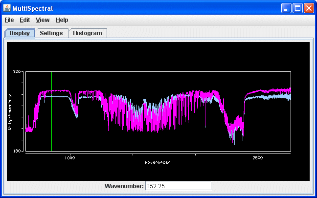
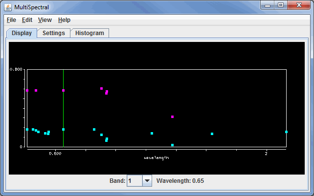
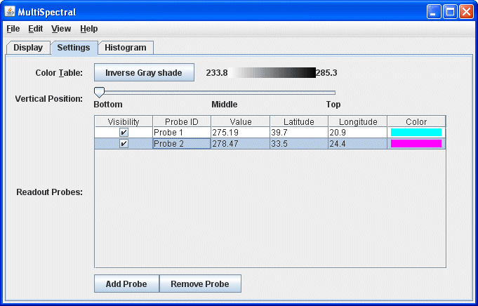
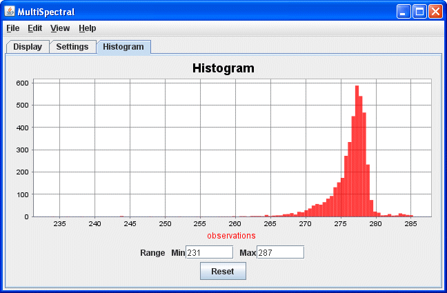

MultiSpectral Display Controls
Overview
HYDRA MultiSpectral Display controls are used to create a multispectral display within McIDAS-V. There are two sets of controls, the MultiSpectral Display and the MultiSpectral Probes. The Multispectral Display consists of three tabs: Display, Settings, and Histogram.
The Display tab shows the spectra. This may differ if the data source is Hyperspectral data or Multispectral data due to the number of bands included with the data. Hyperspectral data will have a spectra drawn as a line, while multispectral data will show a variety of points:

Image 1: Display Tab of the MultiSpectral Display Controls Window for Hyperspectral Data

Image 2: Display Tab of the MultiSpectral Display Controls Window for Multispectral Data
Properties
- Wavenumber - Changes the wavelength/wavenumber displayed in the image by entering in a new value and hitting Enter.
- Band - Changes the band number the green spectral line will be at, as well as the band that is used to display the data in the Main Display window.
- Wavelength - Lists out the wavelength associated with the chosen Band.
Use the Shift+left click+drag combination to create a box of a region to zoom in on. To return to the full spectra, use Ctrl+left click. Middle-clicking on a point in the spectra will change the wavelength/wavenumber of the image displayed. Right click+drag will translate the spectra left or right. Left click+drag on the green wavelength/wavenumber selector bar will allow for changing the wavelength displayed in the image. When dragging the selector bar, the wavelength/wavenumber will be displayed in the upper left corner of the spectra window for the current location of the the bar.
The Settings tab shows the settings for this display control and the readout probes:

Image 3: Settings Tab of the MultiSpectral Display Controls Window
Properties
- Color Table - Shows the active color table and the associated high and low data values in the units of the display. As the mouse pointer is moved over the color bar, the value at a particular color is shown. Right click on the color bar or click on the button that displays the name of the Color Table to make modifications to the color bar. This allows for opening the Color Table Editor, changing the range, selecting other color tables, etc.
- Vertical Position - Sets the vertical position of the range rings with respect to other data being displayed. This can be changed by dragging the slider or typing a value into the field and pressing Enter.
- Background Color - Sets the background color of the display in the Display tab of the Layer Controls. When this is set to Black, the background color will be black and the axes and labels will be white. When this is set to White, the background color will be white and the axes and labels will be black.
- Readout Probes - Lists information on the probes located in the Main Display window. This section allows for modifying the probe visibility and color.
- - Allows for adding a new probe to the MultiSpectral Display.
- - Allows for removing the selected probe from the Readout Probes list as well as from the Main Display window.
- 0-360 Longitude Format - Sets the longitude format in the chart. When this option is checked on, longitudes will list out in the 0-360 degree format. When this option is not checked on, longitudes will list out in the -180-180 degree format.
The Histogram tab shows the histogram of the data for the image:

Image 4: Histogram Tab of the MultiSpectral Display Controls Window
Zoom in by left-clicking and dragging on the histogram, or enter in a set of minimum and maximum values.
Properties
- Range - Allows for changing the minimum and maximum values shown in the image in the Main Display window.
- Reset - Resets histogram back to the default range.
Menus
Many of the menu items seen utilizing this display are standard options that can be found in the Menus section of the Layer Controls page. However, there is one option that is unique to this display.
The View menu has this unique option:
- Use Data Projection - Re-centers the display and resets the zoom level back to the display's initial settings without changing any other preferences you have modified.